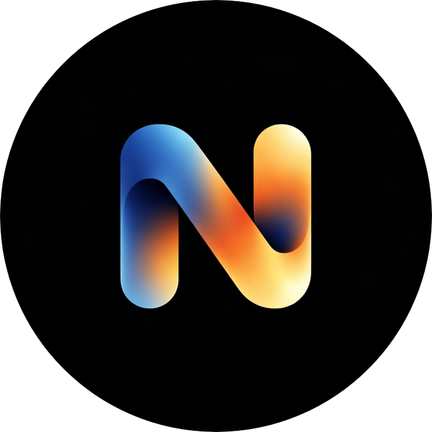

Chats
加载中…
舞台
LIVE

手机编程
正在生成二维码…
未连接设备
手机与电脑需在同一局域网。扫码后即可在手机上查看对话并发送消息，内容双向实时同步。
AI Programming Assistant
Configure an API in Settings to start
Supports project code context, streaming, reasoning
Supports project code context, streaming, reasoning
选择工作流
Plan
Not configured
Model
模型
思考强度
中
Ctrl+T
Model Settings
Token 用量
暂无用量数据
按模型
工作流文档保存位置
Plan / Spec 工作流生成的文档会按任务名分文件夹保存到该目录，可纳入版本控制长期保留。留空则仅保留在当前会话中。
未设置（仅保留在会话中）
导出近期对话 JSONL
选择一个近期对话，将其导出为 JSONL 文件（每行一条 JSON 记录，含元信息、对话消息与工具调用结果），保存到指定位置。
Important Notice
Please back up your project before proceeding. AI-generated content should be reviewed carefully.
请您先备份项目，备份后再使用AI功能，AI生成内容请注意鉴别